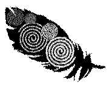
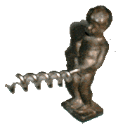
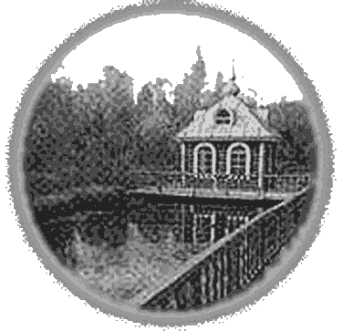

| К десятилетию застоя в актуальном искусстве. |
|---|
ЗАКАТ, ОТКАТ ИЛИ ОТСТОЙ?
Можно констатировать, что с середины 1990-х в отечественном и мировом «актуальном» искусстве ничего нового не случилось. Еще в начале 90-х его пучило от избытка «борьбы течений». Нынче кураторы скребут по сусекам, лепя героев-колобков из третьеплановых персонажей, пережевывающих продукты жизнедеятельности прошедших эпох, или просто занимающихся плагиатом (см. livejournal.maximcs). Десятилетний застой и безрыбье грозит атрофией и стать раком всей этой сферы политкорректности и дешёвого юморка. А вони-то, вони! Но гниение – нормальное состояние цивилизации воров/менял (тоговцев-художников, торговцев-политиков, торговцев-спортсменов, торговцев-военных и т.д.). Что же тогда могло произойти за 3-4 месяца?! Этот «СЪ» посвящен новациям прошедшего весеннее-летнего сезона.
Д. Гнилой, P. Повар
| НОВОСТИ |
|---|
|
ПАТРИОТИЧЕСКИЙ КОНЦЕПТУАЛИЗМ В.Нечеловечко НОВОСТИ КИНО Михаил Трофименков СЛУШАТЬ ПОДАНО Взахлебкин ИЛИ МЫ НЕ ХОРОШИ СОБОЙ? DJ Hlob  |
ОНИ НАС ВЫЛЕЧАТ Всеуничтоженькин АНОНИМЫ Б.Горячкин ПРОЩАЙ, ТОШНОТА Макдональд Шавермов ХАЙ, ДЕГГЕР, ХАЙ! АП-АП ТУЗЕ СКАЙ! Ален Попадью |
БЕРНСКИЙ МУЗЕЙ ЛОМАЕТ ГОЛОВУ НАД ГОЛОВОЙ Алена Миклашевская, МАТКА БОСХА М.Джексон М.ШВЫДКОЙ ПОСТАВИЛ ХУДОЖНИКАМ РАДИКАЛЬНУЮ ЗАДАЧУ Ирина Кулик.  |
| НОВОCТИ ФИЗИЧЕСКОЙ КУЛЬТУРЫ |
|---|
|
СРИ : СРИ М.Гельвуман |
ДЕТИ ЛЮБИЛИ ПУШКИНА А.С.Шюткин |
ПЛЯСКИ НА ТРИБУНАХ С.Иванов |
| В АРХИВ |
|---|
|
ЧТОБЫ НЕ ПОДСКОЛЬЗНУТЬСЯ П.Сахарный |
ВЫСШИЙ СВЕТ Т.Пингвин |
НА ДЕРЕВНЮ БАБУШКЕ |
| ОБЗОРЪ ВЕЧЕРИНОКЪ | СКАЧЕНО ИЗ ТЕНЕТ МИРОВЫХ |
|---|---|
|
Вечеринки, как и художественная жизнь, находятся в состоянии рецессии. За редким исключением, это римейки давно оттанцованногого. ВЫНОСИ, ЗАЛЕТНЫЕ! А.Москалито ФОРТЕЛИ Волковцын СМОЧИЛИ ПОСЕДЕВШИЕ ВИСКИ Б.Лейбл НАШИ ЛЮДИ НЕ ВЪЕЗЖАЮТ П.Уэльский СКВОТ - ОСОБНЯКОМ Дж. Гуляка ТЫКАЛА Д.Хренарио В ОДНОМ БЕЛОМ-БЕЛОМ ДОМЕ Белый Бум К НИКОЛЬСКОМУ ЗАДОМ Захарiй Колобковскiй ВЫПИЛ ЦЕЛУЮ БУТЫЛОЧКУ ЧЕРНИЛ… С.Клякса ЕГО КАЧАЕТ, А ОН ПЛЮЕТ! В.Роджер |
ВОЖДИ СЛЕПЫЕ, ОЦЕЖИВАЮЩИЕ КОМАРА А ВЕРБЛЮДА ПОГЛОЩАЮЩИЕ! На «Органайзере Андрея Ковалева» (livejournal.com/users/kovalev_org) можно прочесть следующее: «Музей Гуггенхайма попросил 18 российских художественных критиков назвать 20 ведущих художников (русских же). В список вошли Комар и Меламид (в качестве одного автора), Кабаков, покойные М. Рогинский и Т. Новиков, а также Булатов, Инфанте, Мамышев-Монро и другие. Почти половина названных живет или жила вне России». Увы и ах, - добавляет лучший московский критик Ковалев - особо меня интересует список критиков. ИСТОРИЯ АСИ КЛЯЧКИНОЙ, КОТОРАЯ ЛЮБИЛА, ДА НЕ ВЫШЛА ЗАМУЖ Душераздирающий рассказ очевидицы c livejournal/performansist. По просьбе друзей-перформансистов постараюсь рассказать о Венеции… Впечатления у меня мрачные. Недовольство мое касается порочной системы биеннале как «заговора кураторов», что противоречит всему Живому. Места художнику на биеннале просто нету. Служитель павильона имеет фирменный бэдж, художник лишен опознавательных знаков. Ко мне не раз подходили знакомые, принимая меня за прессу. Художник должен покупать собственный каталог за полную стоимость, в то время как пресса имеет право на скидку. Его никто не представляет на открытии, им не интересуется пресса. Ведущую роль играют кураторы, пресса, Vip-ы. Чем больше русских приглашают в Венецию, тем больше они ссорятся. Вплоть до демонстративных не-приглашений друг друга на открытия и непускания «конкурентов» на престижные party. А-я то представляла, как мы все сольемся в экстазе, будем пить, плясать… а тут одних русских журналюг навезли около 100! Никто не смотрит проектов, не задает вопросов, не берет интервью. Зачем я учила по-английски формулировки про смыслы проекта!? Первым желанием было посетить зоопарк. Выражение лица посетителя биеннале – это морда верблюда. Теперь про искусство. Это безумная куча-мала. А вот с премиями я абсолютно не согласна. Одна меня задела лично. Гватемалка с бодиартом – это должна была быть я из «Запасного выхода». Вот устроят они в Гватемале биеннале – покажу им. Привезла чайник со свистком! Лиза Морозова ИСТОКИ ХУДОЖЕСТВЕННОГО ВДОХНЕОВЕНИЯ Кухни народов мира / РУССКАЯ ВОДКА  Русь не знала В., когда кн. Владимир произнес: «Веселие на Руси есть пити». Учтя это, послы из Генуи привезли в Россию в 1386 г. виноградный спирт aqua vitae. Но он был признан вредным. Пришествие В. в Россию состоялось лишь к середине XV в. Термин «В.» стал употребляться ближе к XX в. До этого В. называли: «хлебное вино», «перевар», «корчма», «горящее, жженое вино». XVIII в. считается «золотым» в истории Р.В. В 1755 г. Екатерина II определяет винокурение как привилегию дворян. Каждый помещик имел собственную марку В. Дворяне считали престижным иметь В. с ароматизаторами на все буквы: Анисовая, Березовая, Вишневая, Грушевая, Дынная, Ежевичная, Желудевая, Зверобойная, Ирговая, Калиновая, Лимонная, Малиновая, Мятная, Ноготковая, Облепиховая, Полынная, Перцовая, Рябиновая, Смородиновая, Тминная, Укропная, Фисташковая, Хренная, Цикорная, Черемуховая, Шалфейная, Щавелевая, Эстрагонная, Яблочная. В 1894 г. правительством России В. была запатентована под названием «Московская особенная», ее рецептура остается неизменной. Пили В. чарками по 150 г. за раз. Десять чарок были равны стопе. В XVIII в. стопу заменил штоф (1,23 л.). От полуштофа произошли пол-литра. Продавали В. на вес, а не по объему, что исключало фальсификацию. Применение В. связано с употреблением ее в качестве приложения к закусочному столу. К закускам, относятся: сало, ветчина, студень, телятина, солонина, селедка, икра, балык осетровый, лососина, кета, горбуша, кильки, капуста квашеная, яблоки моченые, помидоры соленые, баклажаны фаршированные, грибы соленые и маринованные, винегрет, картофель отварной. Особого внимания заслуживает соленый огурец. Срок хранения В. - 12 мес. В. должна быть охлаждена до 8-100. Пить надо маленькими глотками из стеклянных рюмок вместимостью не более 50 г. Категорически не рекомендуется смешивать В. с пивом. Лучше менять напитки по нарастающей крепости. При переборе можно выпить рюмку коньяка и отрубиться минут на сорок. |
| ЛИТЕРАТУРНЫЙ КОНЕЦ |
|---|
Увидел свет очередной альманах «Мера всех вещей. The end».
Его ред. открыто признает свою неспособность сформулировать концепцию, объединяющую таких мастеров непечатного слова,
как Л.Борисов, С.Ковальский, Вик, О.Котельников, Е.Звягин и др.
| ОЛЬГА ЗАБЕЛИНА | ОЛЕГ КОТЕЛЬНИКОВ | ВИК |
|---|---|---|
|
А член его стоял как телебашня 1980 Не до красок и вовсе нет песен. |
Пока стоит *** Откорми даоса |
АЛЬБОМ ДЛЯ РИСОВАНИЯ С одного берега на другой по реке Пряжке плыл в сторону дома человек в пальто. Был он лохмат, бородат и нечесан – плыл себе на спине. Рука цепко держала авоську, набитую до отказа пустыми бутылками. Он искренне улыбался жизни. И матерился. Это был всем известный художник Сотников. Разбавленный спирт в группе «Кино», накуренный нами с анашой Тимура Новикова. Мир чуточку тронулся с берега. |
Съ продолжает публикацию образцов художественной критики, которая очевидно стремится к сказочному жанру.
Приводим перлы наших золотых перьев – В.М.-Монро (созданный специально для «СЪ») и А.Ипполитова (globalrus.ru).
Несоизмеримость таланта авторов со скромным форматом «Съ» принудила публиковать их с сокращениями.
Полная версия:
| СУСАНИНЪ - ПОНОСЪ |
|---|